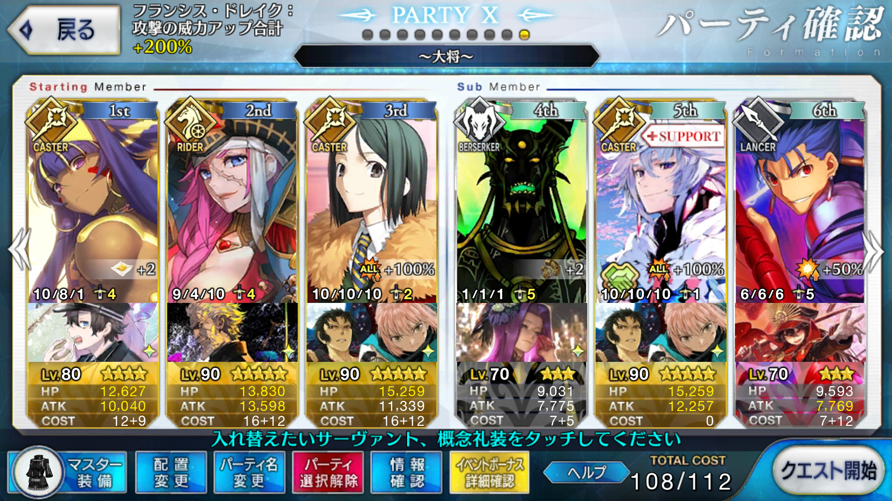

<!DOCTYPE HTML>
<html>
<head><meta name="generator" content="Hexo 3.9.0">
  <meta charset="utf-8">
  
  <title>【FGO】復刻：ぐだぐだ明治維新 ライト版 ユニバーサル鳥羽伏見の戦い 大将級 | ぷらずま式改</title>
  <meta name="author" content="NPlasma">

  
  <meta name="description" content="NPlasmaの個人メモ">
  

  

  <meta name="viewport" content="width=device-width, initial-scale=1, maximum-scale=1">

  <meta property="og:title" content="【FGO】復刻：ぐだぐだ明治維新 ライト版 ユニバーサル鳥羽伏見の戦い 大将級">
  <meta property="og:site_name" content="ぷらずま式改">

  
  

  
    <meta property="og:image" content="/img/ogp.png">
  

  <!-- ogp -->
  
    
      <meta name="description" content="この記事ではFGOイベントの周回を扱います。 編成画像にて最終再臨絵のネタバレがあるのでご注意を">
<meta name="keywords" content="Fate,ゲーム,FGO,Fate&#x2F;GrandOrder,ぐだぐだ明治維新">
<meta property="og:type" content="article">
<meta property="og:title" content="【FGO】復刻：ぐだぐだ明治維新 ライト版 ユニバーサル鳥羽伏見の戦い 大将級">
<meta property="og:url" content="http://elleonard.github.io/nplus_doc/2018/05/19/game/fate/fgo/gudaguda-meiji/universal-toba-fushimi-oda/index.html">
<meta property="og:site_name" content="ぷらずま式改">
<meta property="og:description" content="この記事ではFGOイベントの周回を扱います。 編成画像にて最終再臨絵のネタバレがあるのでご注意を">
<meta property="og:locale" content="ja">
<meta property="og:image" content="http://elleonard.github.io/nplus_doc/2018/05/19/game/fate/fgo/gudaguda-meiji/universal-toba-fushimi-oda/universal-toba-fushimi-oda.png">
<meta property="og:updated_time" content="2019-09-13T04:56:39.530Z">
<meta name="twitter:card" content="summary">
<meta name="twitter:title" content="【FGO】復刻：ぐだぐだ明治維新 ライト版 ユニバーサル鳥羽伏見の戦い 大将級">
<meta name="twitter:description" content="この記事ではFGOイベントの周回を扱います。 編成画像にて最終再臨絵のネタバレがあるのでご注意を">
<meta name="twitter:image" content="http://elleonard.github.io/nplus_doc/2018/05/19/game/fate/fgo/gudaguda-meiji/universal-toba-fushimi-oda/universal-toba-fushimi-oda.png">
<meta name="twitter:creator" content="@elleonard_f">
    
    <meta name="twitter:image" content="http://elleonard.github.io/nplus_doc/img/ogp.png">
  

  <link rel="alternate" href="/nplus_doc/atom.xml" title="ぷらずま式改" type="application/atom+xml">
  <link rel="stylesheet" href="/nplus_doc/css/style.css" media="screen" type="text/css">
  <!--[if lt IE 9]><script src="//html5shiv.googlecode.com/svn/trunk/html5.js"></script><![endif]-->
  


  <link rel="apple-touch-icon" sizes="180x180" href="/nplus_doc/favicon/apple-touch-icon.png">
  <link rel="icon" type="image/png" sizes="32x32" href="/nplus_doc//favicon/favicon-32x32.png">
  <link rel="icon" type="image/png" sizes="16x16" href="/nplus_doc//favicon/favicon-16x16.png">
  <link rel="manifest" href="/nplus_doc//favicon/site.webmanifest">
  <link rel="mask-icon" href="/nplus_doc//favicon/safari-pinned-tab.svg" color="#5bbad5">
  <meta name="msapplication-TileColor" content="#da532c">
  <meta name="theme-color" content="#ffffff">
  <script src="https://kit.fontawesome.com/b51cad8f00.js" crossorigin="anonymous"></script>
</head>
</html>

<body>
  <header id="header" class="inner"><div class="alignleft">
  <h1><a href="/nplus_doc/">ぷらずま式改</a></h1>
  <h2><a href="/nplus_doc/">NPlasma個人メモ</a></h2>
</div>
<nav id="main-nav" class="alignright">
  <ul>
    
      <li><a href="/">Home</a></li>
    
      <li><a href="/nplus_doc/2016/05/29/about/">About</a></li>
    
      <li><a href="https://twitter.com/elleonard_f">Twitter</a></li>
    
      <li><a href="https://github.com/elleonard">GitHub</a></li>
    
      <li><a href="/nplus_doc/2018/02/09/game/fate/fgo/fgo-link/">FGO</a></li>
    
  </ul>
  <div class="clearfix"></div>
</nav>
<div class="clearfix"></div></header>
  <div id="content" class="inner">
    <div id="main-col" class="alignleft"><div id="wrapper"><article class="post">
  
  <div class="post-content">
    <header>
      
        <div class="icon"></div>
        <time datetime="2018-05-19T14:57:16.000Z"><a href="/nplus_doc/2018/05/19/game/fate/fgo/gudaguda-meiji/universal-toba-fushimi-oda/">2018-05-19</a></time>
      
      
  
    <h1 class="title">【FGO】復刻：ぐだぐだ明治維新 ライト版 ユニバーサル鳥羽伏見の戦い 大将級</h1>
  

    </header>
    <div class="entry">
      
        <div id="toc" class="toc-article">
          <p class="toc-title">目次</p>
          <ol class="toc"><li class="toc-item toc-level-1"><a class="toc-link" href="#基本方針"><span class="toc-text">基本方針</span></a></li><li class="toc-item toc-level-1"><a class="toc-link" href="#ドロップアイテム"><span class="toc-text">ドロップアイテム</span></a></li><li class="toc-item toc-level-1"><a class="toc-link" href="#エネミー構成"><span class="toc-text">エネミー構成</span></a></li><li class="toc-item toc-level-1"><a class="toc-link" href="#編成例"><span class="toc-text">編成例</span></a></li><li class="toc-item toc-level-1"><a class="toc-link" href="#周回用キャラ選別"><span class="toc-text">周回用キャラ選別</span></a><ol class="toc-child"><li class="toc-item toc-level-2"><a class="toc-link" href="#アーラシュ-スパルタクス"><span class="toc-text">アーラシュ/スパルタクス</span></a></li><li class="toc-item toc-level-2"><a class="toc-link" href="#ニトクリス"><span class="toc-text">ニトクリス</span></a></li><li class="toc-item toc-level-2"><a class="toc-link" href="#ドレイク"><span class="toc-text">ドレイク</span></a></li><li class="toc-item toc-level-2"><a class="toc-link" href="#アストルフォ-殺生院キアラ"><span class="toc-text">アストルフォ/殺生院キアラ</span></a></li><li class="toc-item toc-level-2"><a class="toc-link" href="#メドゥーサ"><span class="toc-text">メドゥーサ</span></a></li><li class="toc-item toc-level-2"><a class="toc-link" href="#水着イシュタル"><span class="toc-text">水着イシュタル</span></a></li><li class="toc-item toc-level-2"><a class="toc-link" href="#茶々"><span class="toc-text">茶々</span></a></li><li class="toc-item toc-level-2"><a class="toc-link" href="#坂田金時"><span class="toc-text">坂田金時</span></a></li><li class="toc-item toc-level-2"><a class="toc-link" href="#オジマンディアス"><span class="toc-text">オジマンディアス</span></a></li></ol></li></ol>
        </div>
        <p>この記事ではFGOイベントの周回を扱います。</p>
<p>編成画像にて最終再臨絵のネタバレがあるのでご注意を</p>
<a id="more"></a>

<h1 id="基本方針"><a href="#基本方針" class="headerlink" title="基本方針"></a>基本方針</h1><ul>
<li>3T周回する</li>
<li>可能な限りドロップ追加礼装を搭載する</li>
</ul>
<h1 id="ドロップアイテム"><a href="#ドロップアイテム" class="headerlink" title="ドロップアイテム"></a>ドロップアイテム</h1><ul>
<li>封魔のランプ</li>
<li>八連双晶</li>
<li>術の輝石</li>
</ul>
<h1 id="エネミー構成"><a href="#エネミー構成" class="headerlink" title="エネミー構成"></a>エネミー構成</h1><ul>
<li>メカノッブ系</li>
<li>ボイラーファイヤー（イフリート）</li>
<li>西郷エジモリ（エジソン）</li>
</ul>
<h1 id="編成例"><a href="#編成例" class="headerlink" title="編成例"></a>編成例</h1><p></p>
<p>オダチェンステラなし<br>1wはニトクリスの鏡で掃除し、2～3wは凸カレスコドレイク＋孔明で宝具を2連打する<br>壬生狼はフレンド含め凸2枚</p>
<h1 id="周回用キャラ選別"><a href="#周回用キャラ選別" class="headerlink" title="周回用キャラ選別"></a>周回用キャラ選別</h1><h2 id="アーラシュ-スパルタクス"><a href="#アーラシュ-スパルタクス" class="headerlink" title="アーラシュ/スパルタクス"></a>アーラシュ/スパルタクス</h2><p>いつもの<br>後衛に壬生狼を積んでおけば、2w辺りまで対処出来るかも？</p>
<h2 id="ニトクリス"><a href="#ニトクリス" class="headerlink" title="ニトクリス"></a>ニトクリス</h2><p>自前でNPを100にできる唯一の全体宝具持ち<br>ドロップ追加礼装を持ちながら1wを処理できる<br>凸カレスコを持たせれば2回連続で宝具を放つことも可能</p>
<p>1w担当だけでなく、2～3wの取り巻きバーサーカーの処理にも活躍できる</p>
<h2 id="ドレイク"><a href="#ドレイク" class="headerlink" title="ドレイク"></a>ドレイク</h2><p>自前でNPを+50できる全体宝具ライダー<br>孔明と合わせて宝具を2回打てる</p>
<h2 id="アストルフォ-殺生院キアラ"><a href="#アストルフォ-殺生院キアラ" class="headerlink" title="アストルフォ/殺生院キアラ"></a>アストルフォ/殺生院キアラ</h2><p>スキル強化次第でドレイクと似た運用ができる<br>ただし、特にアルターエゴでありA宝具のキアラは宝具火力に不安が残る</p>
<h2 id="メドゥーサ"><a href="#メドゥーサ" class="headerlink" title="メドゥーサ"></a>メドゥーサ</h2><p>NPを20獲得できる全体宝具ライダー<br>イベント特効持ちだが、怪力や銀フォウをしっかりつぎ込んでおかないと火力不足<br>2wの処理に一役買ってくれる</p>
<h2 id="水着イシュタル"><a href="#水着イシュタル" class="headerlink" title="水着イシュタル"></a>水着イシュタル</h2><p>全体に3T持続するBQアップバフを持つ全体宝具ライダー<br>NPは礼装やサポートサーヴァントになんとかしてもらう必要があるものの、味方の火力も補助できるのは魅力<br>2～3wのどちらかを処理することになるだろう</p>
<p>クリティカル威力アップスキルを持っているので、追撃もお手の物</p>
<h2 id="茶々"><a href="#茶々" class="headerlink" title="茶々"></a>茶々</h2><p>イベント特効持ち全体宝具バーサーカー<br>スキル1を鍛えておけば毎ターンNPを10獲得できる<br>凸日輪の城を装備しておけば初期NP40、自前でNPを10獲得してしまえば、後は孔明で宝具を撃てる</p>
<p>今回のイベントの報酬だが、周回性能は優れているため育成する価値はある</p>
<h2 id="坂田金時"><a href="#坂田金時" class="headerlink" title="坂田金時"></a>坂田金時</h2><p>NPを自前で50獲得できる<br>HPの高いキャスターを相手にするため、羅生門イベントの配布サーヴァントであるライダーのほうを採用することになるだろう<br>取り巻きを処理する全体宝具にチェインして自らの宝具を放てばオーバーチャージで威力が上がる</p>
<h2 id="オジマンディアス"><a href="#オジマンディアス" class="headerlink" title="オジマンディアス"></a>オジマンディアス</h2><p>味方全体にNPを20配れる単体宝具ライダー<br>宝具の打ち方は金時と同様だが、味方にNPを配れるのでNP調整役として編成に幅を持たせられる</p>
<p>カリスマによる全体バフを持っているのも心強い</p>

      
    </div>
    
    <footer>
        <div class="alignright">
            <a href="https://twitter.com/share?ref_src=twsrc%5Etfw" class="twitter-share-button" data-text="【FGO】復刻：ぐだぐだ明治維新 ライト版 ユニバーサル鳥羽伏見の戦い 大将級 | ぷらずま式改" data-url="http://elleonard.github.io/nplus_doc/2018/05/19/game/fate/fgo/gudaguda-meiji/universal-toba-fushimi-oda/" data-via="elleonard_f" data-show-count="false">Tweet</a><script async src="https://platform.twitter.com/widgets.js" charset="utf-8"></script>
        </div>
        
  
  <div class="categories">
    <a href="/nplus_doc/categories/FGO/">FGO</a>
  </div>

        
  
  <div class="tags">
    <a href="/nplus_doc/tags/Fate/">Fate</a>, <a href="/nplus_doc/tags/ゲーム/">ゲーム</a>, <a href="/nplus_doc/tags/FGO/">FGO</a>, <a href="/nplus_doc/tags/Fate-GrandOrder/">Fate/GrandOrder</a>, <a href="/nplus_doc/tags/ぐだぐだ明治維新/">ぐだぐだ明治維新</a>
  </div>

        
          <div class="article-prev">
              <a href="/nplus_doc/2018/05/21/game/fate/fgo/gudaguda-meiji/nichirin-castle-shinsengumi/">【FGO】復刻：ぐだぐだ明治維新 ライト版 決戦、ぐだぐだ日輪城！ 隊士級 <span class="prev-arrow"/></a>
            </div>
        
        
          <div class="article-next">
            <a href="/nplus_doc/2018/05/16/game/fate/fgo/kogetsukan/">【FGO】虚月館殺人事件 <span class="next-arrow"/></a>
          </div>
        
        <!-- partial('post/share') -->
      <div class="clearfix"></div>
    </footer>
  </div>
</article>


</div></div>
    <aside id="sidebar" class="alignright">
  <div class="search">
  <form action="//google.com/search" method="get" accept-charset="utf-8">
    <input type="search" name="q" results="0" placeholder="検索">
    <input type="hidden" name="q" value="site:elleonard.github.io/nplus_doc">
  </form>
</div>

  
<div class="widget tag">
  <h3 class="title">カテゴリ</h3>
  <ul class="entry">
  
    <li><a href="/nplus_doc/categories/FGO/">FGO</a><small>47</small></li>
  
    <li><a href="/nplus_doc/categories/niconico/">niconico</a><small>3</small></li>
  
    <li><a href="/nplus_doc/categories/アニメ感想/">アニメ感想</a><small>10</small></li>
  
    <li><a href="/nplus_doc/categories/ゲーム/">ゲーム</a><small>61</small></li>
  
    <li><a href="/nplus_doc/categories/ゲーム/ゲームレビュー/">ゲームレビュー</a><small>50</small></li>
  
    <li><a href="/nplus_doc/categories/ゲーム制作/">ゲーム制作</a><small>12</small></li>
  
    <li><a href="/nplus_doc/categories/遊戯王ブロンティーズ/デッキレシピ/">デッキレシピ</a><small>4</small></li>
  
    <li><a href="/nplus_doc/categories/小説/">小説</a><small>4</small></li>
  
    <li><a href="/nplus_doc/categories/情報技術/">情報技術</a><small>11</small></li>
  
    <li><a href="/nplus_doc/categories/漫画/">漫画</a><small>2</small></li>
  
    <li><a href="/nplus_doc/categories/百合/">百合</a><small>6</small></li>
  
    <li><a href="/nplus_doc/categories/艦これ/">艦これ</a><small>76</small></li>
  
    <li><a href="/nplus_doc/categories/遊戯王ブロンティーズ/">遊戯王ブロンティーズ</a><small>4</small></li>
  
    <li><a href="/nplus_doc/categories/雑記/">雑記</a><small>6</small></li>
  
  </ul>
</div>


  
<div class="widget tag">
  <h3 class="title">最近の投稿</h3>
  <ul class="entry">
    
      <li>
        <a href="/nplus_doc/2021/05/17/game/atelier/ryza2/">【ゲーム感想】ライザのアトリエ2 〜失われた伝承と秘密の妖精〜</a>
      </li>
    
      <li>
        <a href="/nplus_doc/2021/03/01/game/ghost-of-tsushima/">【ゲーム感想】Ghost of Tsushima</a>
      </li>
    
      <li>
        <a href="/nplus_doc/2021/01/10/engineering/rmmz/dont-access-private-from-outside/">【RPGツクールMV/MZ】なぜアンダースコアで始まる変数にクラスの外からアクセスしてはならないのか</a>
      </li>
    
      <li>
        <a href="/nplus_doc/2020/12/31/misc/2020/">2020年の振り返り</a>
      </li>
    
      <li>
        <a href="/nplus_doc/2020/12/28/game/tales-of/tales-of-vesperia/">【ゲーム感想】Tales Of Vesperia リマスター</a>
      </li>
    
  </ul>
</div>


  
<div class="widget tag">
  <h3 class="title">Link</h3>
  <ul class="entry">
    
      <li>
        <a href="https://www.nicovideo.jp/">niconico</a>
      </li>
    
      <li>
        <a href="http://lovingtheflags1986.blog96.fc2.com/">国旗と酒が待ち遠しいドリル日記</a>
      </li>
    
  </ul>
</div>


</aside>
    
    <div class="clearfix"></div>
  </div>
  <footer id="footer" class="inner"><div class="alignleft">
  <p>
  
  &copy; 2021 NPlasma
  
  All rights reserved.</p>
  <p>Powered by <a href="http://hexo.io/" target="_blank">Hexo</a></p>
</div>
<div class="alignright">
  <a href="https://github.com/elleonard"><i class="fab fa-github"></i></a>
  <a href="https://twitter.com/elleonard_f"><i class="fab fa-twitter-square"></i></a>
</div>
<div class="clearfix"></div>
</footer>
  <script src="/nplus_doc/js/jquery.imagesloaded.min.js"></script>
<script src="/nplus_doc/js/gallery.js"></script>


<link rel="stylesheet" href="/nplus_doc/fancybox/jquery.fancybox.css" media="screen" type="text/css">
<script src="/nplus_doc/fancybox/jquery.fancybox.pack.js"></script>
<script type="text/javascript">
(function($){
  $('.fancybox').fancybox();
})(jQuery);
</script>


<div id='bg'></div>
</body>
</html>
